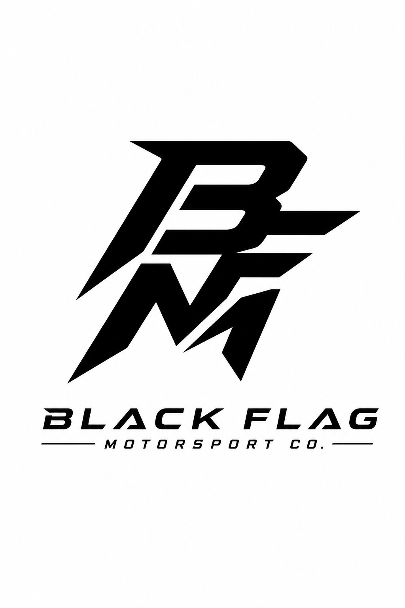
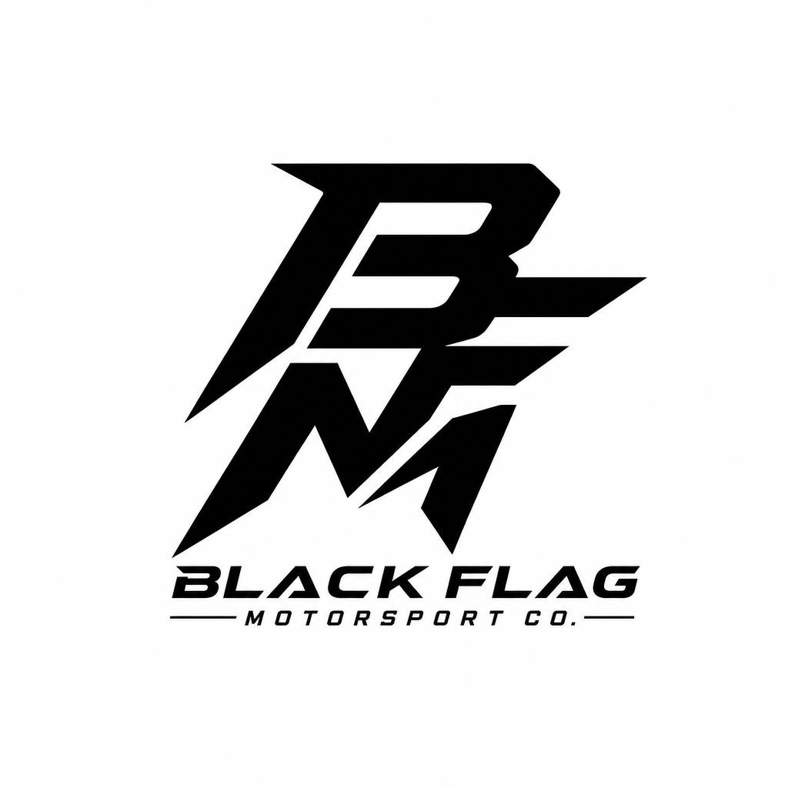
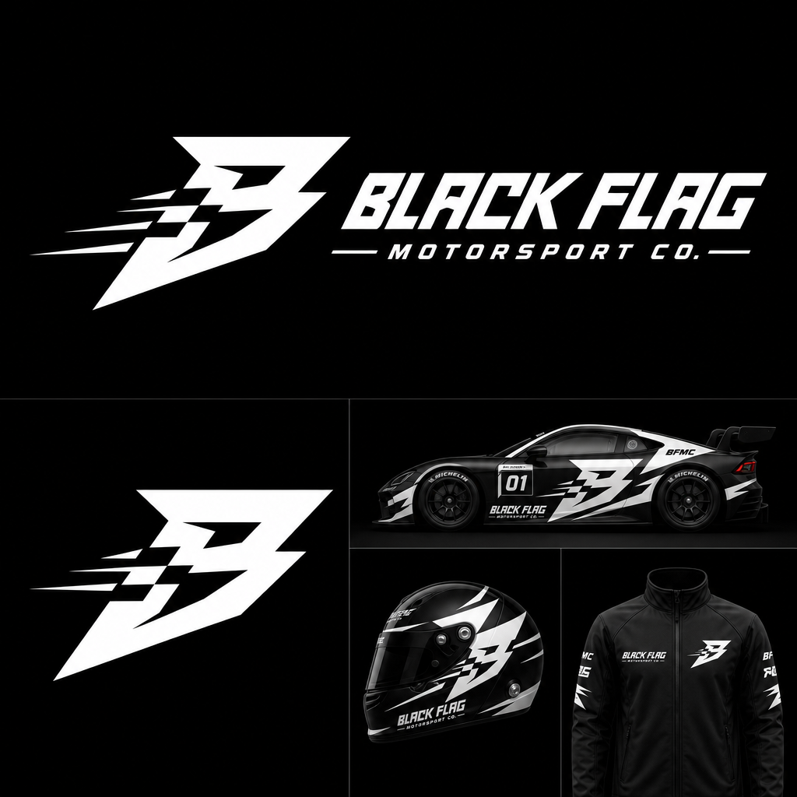
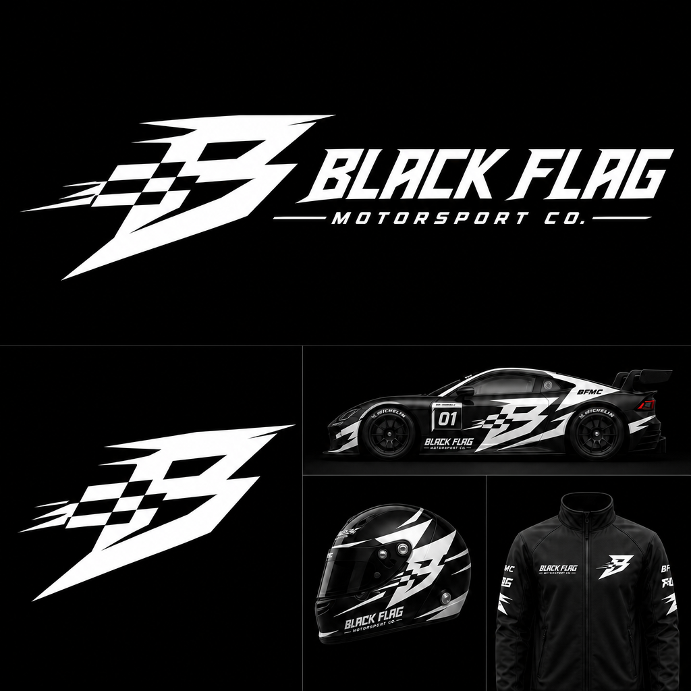
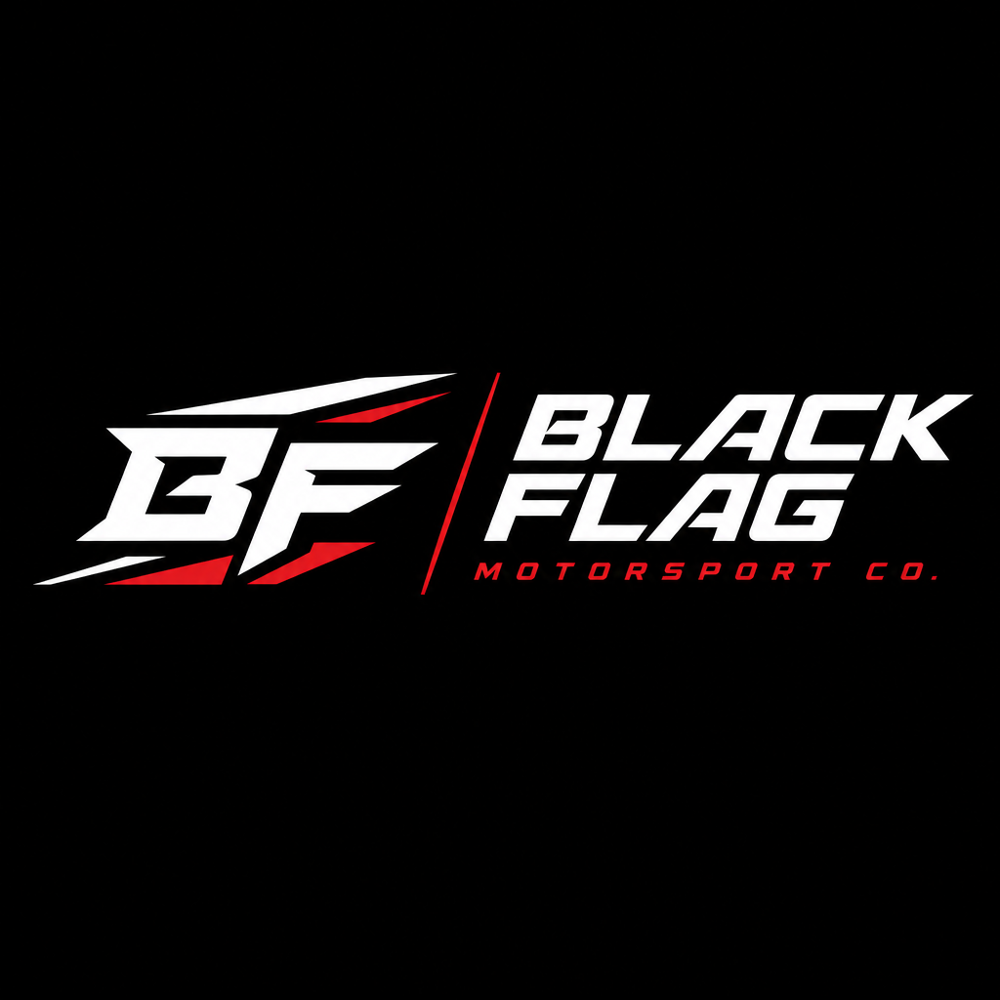
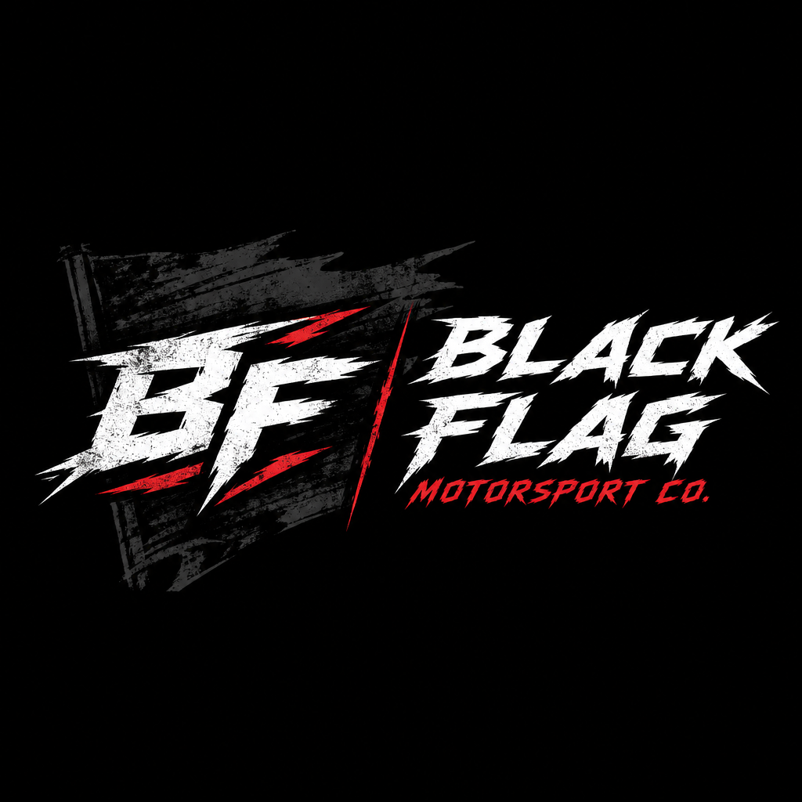
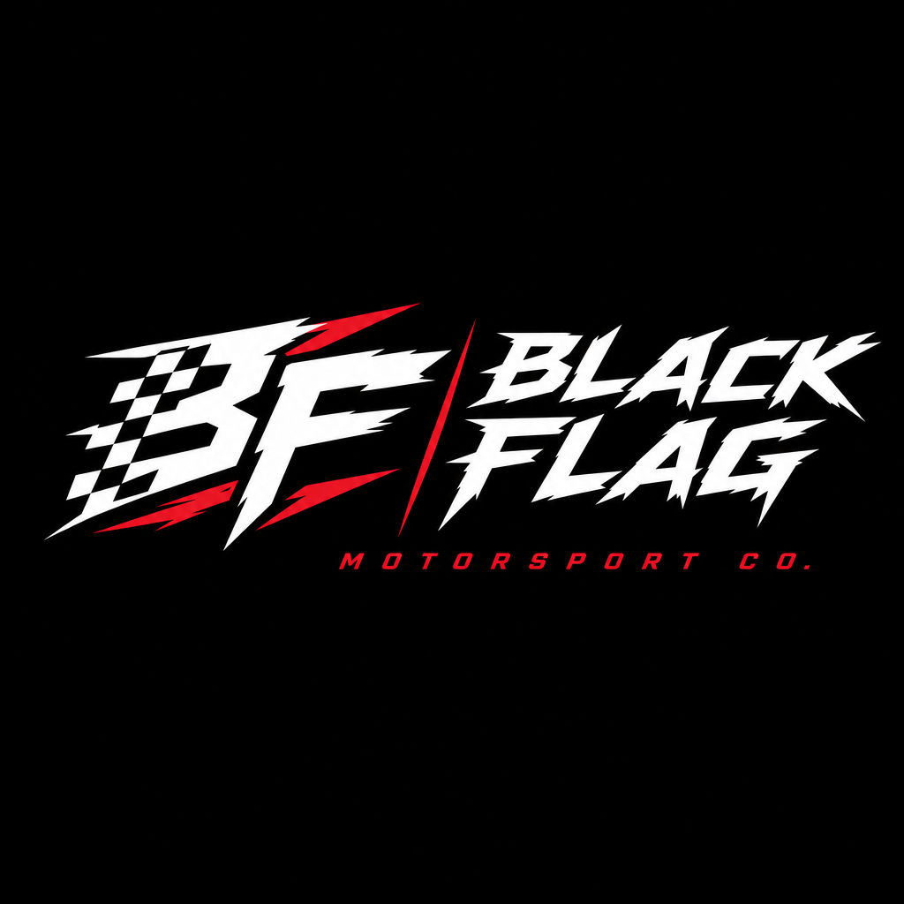

How can AI generate a distinctive motorsport clothing brand identity without losing authenticity, culture, and emotional connection to racing communities?
Research Question
How can AI be used to create culturally authentic branding for motorsport streetwear instead of generic outputs?
Why It Matters
AI design tools often flatten style and produce repetitive visuals. Streetwear and car culture rely heavily on identity, rebellion, and uniqueness. This project explores how to bridge that gap.
Curiosity Statement
How can AI generate a distinctive motorsport clothing brand identity without losing authenticity, culture, and emotional connection to racing communities?
Shows structured, high-performance visual systems built on clarity, speed, and recognizability.
Demonstrates how storytelling, systems, and cultural positioning matter more than just visual design.
Explains how structured prompts with constraints improve AI-generated design outputs.
Shows consistency, boldness, and how identity scales across vehicles, merch, and media.
Proves legitimacy comes from authentic passion for motorsport, not just racing motifs on apparel.
Shows how to balance minimalism with aggressive racing elements across identity systems.
Highlights the tension of modern design workflows — AI accelerates but human curation prevents soulless outcomes.
Emphasizes durability and historical motorsport language as cornerstone of grassroots identity.
Pattern 1 — AI defaults to over-design
AI branding outputs consistently add unnecessary detail, decoration, and layering when not restricted.
Pattern 2 — Motorsport identity is built on reduction
Real racing brands prioritize instant recognition at speed — simple shapes, bold contrast, minimal elements.
Pattern 3 — Control is the real design skill
Output quality depends on imposing constraints and editorial judgment, not prompting "creativity."
Pattern 4 — Systems outperform single logos
Strong brands rely on identity systems (livery, typography, applications) rather than isolated marks.
What I Needed to Learn
From generation → direction control
AI is used to explore directions that are later refined manually, not to "create logos" autonomously.
From single logo → identity system
The project shifted from one brand mark to a full identity system for Black Flag Motorsport Co.
Constraint-led design strategy
Intentional tight prompt constraints simulate real motorsport design discipline.
Q1
Where is the line between AI exploration and human authorship in identity design?
Q2
What specific constraints produce the most authentic motorsport-level design outcomes?
Q3
How can a single AI-generated concept evolve into a consistent multi-application brand system?
Across 6 Information Interactions, I tested assumptions about AI branding:
What improved AI outputs the most?
Constraints + iteration — not longer prompts or more visual detail.
Why do motorsport logos avoid excessive detail?
Simple logos remain readable and recognizable at speed and small scale.
Did one perfect prompt create the strongest results?
No — repeated refinement across iterations created stronger outcomes than any single prompt.
Why did early AI concepts fail?
They were too decorative, overly detailed, and lacked motorsport realism.
What principle mattered most for logo strength?
Silhouette readability and simplicity — not visual complexity.
How can AI help without replacing design judgment?
AI accelerates exploration, but designers must curate, verify, and refine outputs.
Tested: Constrained (Set A) vs. unconstrained (Set B) prompting. Verified: Constrained prompts produced logos readable at speed and scalable across apparel. Unconstrained outputs looked impressive but failed real-world branding tests.
Tested: Whether AI-generated racing logos matched real motorsport branding. Verified: Professional identities rely on restraint and consistency — AI outputs needed significant refinement after generation.
Tested: Highly detailed vs. minimal AI prompts. Verified: Real F1 branding uses minimal shapes and strong typography. I rejected several AI concepts for being visually cluttered.
Tested: Vague vs. structured prompts. Verified: Structured prompts with clear constraints consistently produced more usable concepts. Weak prompts generated generic racing imagery.
Tested: One-shot generation vs. iterative refinement across ChatGPT and Gemini. Verified: The strongest logos emerged from generate → critique → refine → repeat, not from a single prompt.
Tested: Whether "more racing graphics = stronger branding." Verified: Selective motorsport cues create a stronger identity than sponsor-heavy or overloaded designs.
Setup Milanote, refine inquiry. Tools: Milanote, ChatGPT. Output: Command Center structure.
Collected 6–8 sources across motorsport branding, streetwear identity, and AI workflow documentation. Patterns identified.
Analyzed patterns, refined creative direction. Insights: AI outputs improve significantly when grounded in real design research.
Prompt experiments comparing ChatGPT vs Gemini. Discovered constraint-based prompting produces stronger results.
Refined identity decisions before mockups. Realized logo system and visual language needed clarity first.
Designed logos, visuals, system using Figma and AI tools. 3 directions explored.
Critique, revision, final logo, sweatshirt mockup, site build.
Entry 1 — First attempt
Prompt: "Create a motorsport streetwear logo inspired by F1 and underground racing culture"
Tool: ChatGPT
Result: Strong, clean start with solid readability, but played too safe — felt like a generic F1-inspired brand. Biggest issue: the "Black Flag" concept (disqualification, rebellion) wasn't being fully used.
Change: Added "gritty, anti-corporate, distorted typography" constraint.
Prompt: "Generate aggressive streetwear branding with racing sponsor aesthetics"
Tool: ChatGPT
Result: Hit much harder — sponsor grid, aggressive typography, layered decals sold the underground crossover. But swung too far into chaos. Everything competed for attention instead of building a clear system.
Change: Pulled back 20–30% of the noise to tighten the visual system.
Tried: AI logo generation
Worked: Fast iteration
Failed: Too polished / generic
Next: Add constraints + imperfections
Tried: Typography-focused prompts
Worked: Strong identity direction
Failed: Lack of consistency
Next: Build a system instead of single outputs
Weak Prompt
"Make a cool racing logo."
Generic racing imagery, inconsistent style, lacks identity, too detailed.
Structured Prompt
"Create a minimal motorsport logo for Black Flag Motorsport Co. inspired by Formula 1, endurance racing, and underground car culture. Bold geometric forms, aggressive symmetry, high contrast, scalable iconography, suitable for apparel and decals, recognizable at small sizes."
Stronger silhouette, clearer identity, usable for apparel, closer to professional motorsport branding.
Key discovery: Better prompts came from evaluation and iteration, not from writing one giant prompt.
Each direction was prompted, evaluated, critiqued, and refined. Below shows the before/after of prompt-guided iteration.


Prompt refinement: "Close the distance between the letters in the monogram and in the 'Black Flag' portion of the typography."


Prompt refinement: "Make the flag portion of the B more prominent, make the text more sharp, aggressive, aerodynamic."


Prompt refinement: "Add a distressed look to the BF, add a solid black flag behind the BF, make the typography more aggressive."

Final Logo Prompt
"Create a final professional logo for Black Flag Motorsport Co. combining three existing concepts. Use the aggressive angular BF monogram from the current design, but integrate the checkered flag pattern directly into the monogram as a clean negative-space element. Retain the sharp motorsport-inspired typography from the Black Flag wordmark while refining proportions and consistency. Balance premium automotive branding with aggressive racing culture. Inspired by GT3 race teams, performance engineering, apex racing lines, and modern motorsport graphics."
A motorsport streetwear identity system combining AI-assisted ideation with human-controlled refinement — logo, typography, apparel applications, and visual language for Black Flag Motorsport Co.
Possible Outcomes
What I made: A complete brand identity system for a motorsport streetwear label, including a geometric BF monogram, aggressive wordmark, three exploration directions, and a refined final logo designed for apparel, decals, and digital use.
What is strongest: The final logo balances premium automotive branding with aggressive racing culture. The checkered flag integrated as negative space within the BF monogram creates a distinctive mark that works at multiple scales.
How AI shaped the outcome: AI enabled rapid exploration of visual directions that would have taken significantly longer by hand. Prompt iteration — evaluating outputs, refining constraints, and retesting — became the core workflow. AI was never the final decision-maker; it generated possibilities that I curated, critiqued, and refined.
What I selected or rejected: Early outputs were too generic (Entry 1) or too chaotic (Entry 2). I rejected overly sponsor-heavy aesthetics, clashing typography treatments, and designs that felt closer to esports than motorsport. I selected directions with strong silhouette readability, geometric simplicity, and authentic racing language.
How research informed these decisions: Pattern analysis revealed that motorsport identity is built on reduction — real racing brands prioritize instant recognition at speed over visual complexity. Constraint-based prompting (tested across 6 Information Interactions) confirmed that simplicity and silhouette readability produce the strongest, most scalable results. Every rejection and selection traces back to these verified findings.
What I would improve: I would test the identity system across more physical applications — embroidered patches, vinyl decals, screen-printed garments — to verify scalability and reproduction quality. The workflow could also benefit from testing across additional AI image models for broader comparison.
Several directions were explored and rejected during the process:
This project changed how I think about AI-generated branding and creative workflows. Before this research, I approached AI mostly as a fast image generator. I assumed a detailed prompt would quickly produce a usable motorsport logo system. But early outputs showed the opposite — many concepts looked visually busy, overly detailed, or disconnected from authentic motorsport branding. The biggest learning was that introducing constraints improved outcomes dramatically. Asking for reduced geometry, silhouette readability, scalability, and motorsport realism consistently produced stronger directions than open-ended creative prompts. AI only really works well when I already know exactly what I'm trying to get out of it, and good prompts come from actually understanding design.
What clicked for me was realizing that the research side ended up being more valuable than the generation itself. Going through racing identities in Milanote, collecting references, and breaking down visual patterns taught me more than the AI outputs did. I learned that successful motorsport branding is built on reduction, not addition — the best logos are simple enough to survive motion blur, distance, and extreme scaling. I also had to accept that AI creates a lot of cleanup and refinement work. Designs that look cool for two seconds on a mood board completely fall apart when you think about embroidery, decals, or single-color printing. Because of that, I've had to get more intentional about treating bad outputs as part of the process instead of failures, because terrible results are often more useful — they help me figure out exactly why something doesn't work.
"The research side ended up being more valuable than the generation itself. Going through racing identities in Milanote, collecting references, and breaking down visual patterns taught me more than the AI outputs did."
The central question I keep coming back to is where the line is between AI-assisted and AI-dependent. I still want the final outcome to feel like an actual identity with its own point of view, not just another generic motorsport brand. The most important design decisions had to come from me, not from endless prompt iterations. AI definitely speeds certain parts of the process up — especially rapid exploration, pattern identification, and visual variation — but it also requires constant vigilance to maintain originality and brand authenticity. This project shifted my direction from "making a cool logo" to "building a repeatable AI workflow for motorsport identity design." Moving forward, I want to continue refining this workflow, testing prompts across different AI models, and building stronger systems that prove AI can be a genuine creative partner rather than a shortcut.
What I Would Do Next